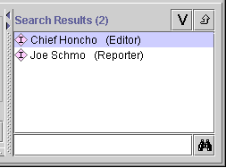

The Search Results Pane at the right of the Query Tab displays the query results when you click Find.
Note: If you are working on a smaller screen, you may not see this pane. To view or enlarge the Search Results Pane, drag the slider bar at the right side of the Query Pane (to the left of the Search Results Pane). See Working With a Small Window for more information.

The Search Results Pane has the following components:
A list box which shows all instances that match the most recent query.
Two buttons which allow you to get more information about a selected instance.
A Find bar which allows you to find an instance in a long list.
These components are fairly simple, so only the buttons are described further.
The buttons at the right of the pane have the following actions:
| View button: Click this button to open the Instances Form for a selected instance | |
| Back References button: Click this button to view all references to the selected instance. |
Next: The Query Library Pane